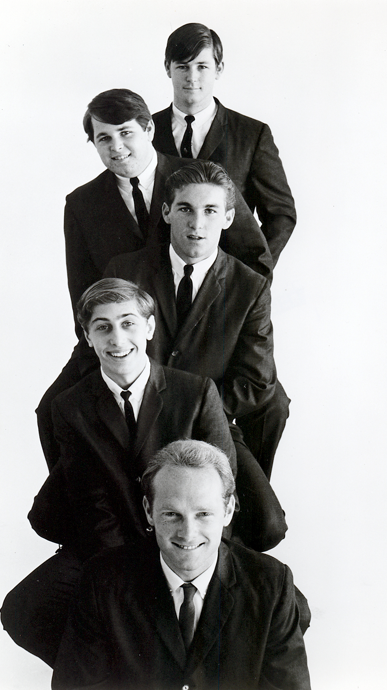

Garage rock was teenagers making rock and roll in an actual garage.
Cheap guitars, a fuzzbox, and a wheezing organ were all it took.
The sound only ruled the airwaves for a few years.
It still left behind some of the rawest singles in rock history.

Table of Contents
- What Is Garage Rock
- Louie Louie and the Sound the FBI Couldn't Decode
- Where It All Started
- Surf Rock's Instrumental Cousin
- The Bands That Defined the Sound
- From "Punk Rock" to Nuggets
- FAQ
What Is Garage Rock
Garage rock is a raw, three-chord style of rock and roll.
It peaked across the United States and Canada between 1963 and 1968.
Most of it was made by teenagers with little training and a lot of nerve.
The name comes from where these bands actually rehearsed, plugged into whatever amp fit in the garage.
Many were more professional than the myth suggests, but the do-it-yourself spirit was real.
Songs leaned on basic chords, shouted vocals, and lyrics about lying girls and school dances.
The Gear That Defined the Noise
A fuzzbox pushed the guitar into deliberate distortion.
That sound was rare and shocking at the time.
A Farfisa or Vox combo organ added a thin, buzzing wheeze.
It became one of the genre's signature textures.
Bands built songs around a "raveup," a stripped-down instrumental break.
Harmonicas and tambourines filled in for horns a garage band could never afford.
None of it was clean, and that was the point.
Louie Louie and the Sound the FBI Couldn't Decode
No single record explains garage rock better than "Louie Louie."
Richard Berry wrote and first recorded the song in 1955.
He based it on a Latin cha-cha rhythm he'd heard in a Los Angeles club.
The Kingsmen, a Portland, Oregon band, cut their version in 1963.
The whole session cost about fifty dollars and took one take.
Singer Jack Ely's vocal came out so slurred that almost nobody could make out the words.
The single climbed to number two on the Billboard Hot 100 that December.
An Actual FBI Case File
The mumbled lyrics fueled rumors that the words were obscene.
Indiana governor Matthew Welsh publicly called the record pornographic.
He pushed radio stations to pull it off the air.
That complaint triggered a real FBI investigation from February to May 1964.
Investigators found nothing.
A parent's letter to Director Hoover reopened the case in 1965.
On May 17, 1965, the FBI Laboratory closed the file for good.
Their ruling: the lyrics were unintelligible at any speed.
"Louie Louie" never needed to say anything filthy.
Its garbled snarl was already the whole argument, in one single.
Where It All Started
The Pacific Northwest is usually credited as the genre's birthplace.
Tacoma, Washington's The Wailers scored a national hit with "Tall Cool One" in 1959.
Their Tacoma neighbors The Sonics went further still.
They screamed through "The Witch" and "Have Love, Will Travel" with a distortion critics later called proto-punk.
Portland's Kingsmen carried that same regional attitude straight onto the Billboard charts.
The British Invasion Lit the Fuse
The Beatles played The Ed Sullivan Show on February 9, 1964.
That single broadcast sent a generation of American teenagers out to buy guitars.
Historian Mark Nobles has estimated over 180,000 bands formed in the US between 1964 and 1968.
British fuzz riffs crossed the Atlantic just as fast.
The Kinks' "You Really Got Me" came out of that same British Invasion wave.
It handed American bands a blueprint for turning two power chords into a hit.
From there the sound spread coast to coast.
Los Angeles' Sunset Strip scene produced The Standells.
Their "Dirty Water" reached number 11 on the Billboard Hot 100 in July 1966.
It later became an anthem at Boston sports games, even though the band was from Los Angeles.
Fellow Angelenos The Seeds built "Pushin' Too Hard" around a stark two-chord organ vamp.
Michigan's Question Mark and the Mysterians topped the chart with "96 Tears."
Texas's Sam the Sham and the Pharaohs turned "Wooly Bully" into Billboard's top record of 1965, despite the single never hitting number one.
Surf Rock's Instrumental Cousin
Surf rock grew up alongside garage rock in Southern California.
It shared the same amateur roots but pointed the fuzz toward the ocean instead of the school parking lot.
Dick Dale, later dubbed the King of the Surf Guitar, built the sound at the Rendezvous Ballroom in Balboa, California.
He played there through a run of packed shows in 1961.
Dale played so loud and fast that he pushed Fender founder Leo Fender to build him louder amps with deeper reverb.
That wet, splashy tone came to define surf guitar.
His 1962 instrumental "Miserlou" adapted an Eastern Mediterranean folk melody into rapid-fire staccato picking.
It found a whole new audience decades later through the 1994 film Pulp Fiction.
From Reverb Instrumentals to Vocal Harmony
Tacoma's own Ventures pushed the instrumental side further still.
Their 1960 single "Walk Don't Run" adapted a jazz guitar piece by Johnny Smith.
It helped turn the electric guitar instrumental into a genuine pop staple.
The Beach Boys then took the same scene and put voices on top of it.
Formed in Hawthorne, California in 1961, they scored their first national hit with "Surfin' Safari" in 1962.
"Surfin' USA" followed a year later, its melody borrowed closely enough from Chuck Berry's "Sweet Little Sixteen" to later earn Berry a co-writing credit.
"Fun, Fun, Fun" and "California Girls" carried that sunny formula through 1964 and 1965.
By 1966's "Good Vibrations," built around the eerie wail of an Electro-Theremin, Brian Wilson pushed surf songwriting into something far stranger and more ambitious.
The Bands That Defined the Sound
No single act owns garage rock.
These bands, spanning both its fuzzed-out and reverb-soaked sides, shaped what the genre became.
- The Kingsmen, whose "Louie Louie" set the three-chord template the whole genre followed
- The Sonics, Tacoma's screaming, distorted answer to the era's polite pop radio
- The Standells, the Los Angeles band whose "Dirty Water" became Boston's unofficial anthem
- The Seeds, built around Sky Saxon's snarl and a stripped-down two-chord organ groove
- Sam the Sham and the Pharaohs, who turned "Wooly Bully" into a Tex-Mex party anthem
- Dick Dale, the King of the Surf Guitar, whose reverb-drenched playing built surf rock from scratch
- The Ventures, Tacoma's instrumental hitmakers behind "Walk Don't Run"
- The Beach Boys, who carried surf rock's harmonies from the beach all the way to "Good Vibrations"
From "Punk Rock" to Nuggets
Nobody called any of this garage rock at the time.
The bands themselves had no shared genre name in the 1960s.
Critics Lenny Kaye, Dave Marsh, Lester Bangs, and Greg Shaw defined the style retroactively in the early 1970s.
They first called it punk rock, the earliest recorded use of that phrase for any style of music.
Dave Marsh described Question Mark and the Mysterians that way in print in May 1971.
The Compilation That Built the Canon
In 1972, guitarist and critic Lenny Kaye compiled "Nuggets: Original Artyfacts from the First Psychedelic Era, 1965-1968."
It gathered dozens of these singles onto one double album.
Kaye's liner notes used both "punk rock" and "garage-punk" to describe the music.
The term "garage rock" itself didn't take hold with critics and fans until the 1980s.
Its fingerprints run straight through the raw guitar sound of The Stooges and the MC5.
From there it fed into 1970s punk, and later into revival waves that rediscovered the same three-chord urgency decades on.
Every band above is worth a closer look on its own.
Start with the British Invasion hub to see the sound that helped ignite the boom.
Or read how The Kinks turned a two-chord riff into a hit with "You Really Got Me."
Test what you've learned with the What's Your 60s Sound? quiz or the 1960s Music Trivia tool.
FAQ: Garage & Surf Rock
What is garage rock?
Garage rock is a raw, amateur-leaning style of rock and roll from the mid-1960s.
It gets its name from the literal garages where teenage bands rehearsed on cheap guitars and combo organs, favoring three-chord simplicity over polish.
What is the difference between garage rock and surf rock?
Surf rock came first, built around reverb-drenched instrumentals from artists like Dick Dale and The Ventures, later joined by The Beach Boys' vocal harmonies about cars and beaches.
This harder-edged scene grew out of that same amateur, guitar-driven world but leaned into fuzz, shouted vocals, and three-chord aggression, making it the rawer, more rebellious sibling.
Why is it called garage rock?
The name reflects where thousands of teenage bands actually rehearsed, the family garage, on whatever amps and drums they could afford.
No one used the term during the 1960s itself.
Critics including Lenny Kaye and Lester Bangs coined it retroactively in the early 1970s, after first calling the same music punk rock.
Why did the FBI investigate Louie Louie?
The Kingsmen's 1963 recording slurred its lyrics so badly that rumors spread the words were obscene.
Indiana governor Matthew Welsh called it pornographic, prompting an FBI investigation that ran from February to May 1964 and again from mid-1965.
On May 17, 1965, the FBI Laboratory closed the case, ruling the lyrics unintelligible at any speed.
What was the first garage rock song?
There's no single agreed-upon answer.
Link Wray's instrumental "Rumble" (1958) is often cited as an early ancestor for its distorted power chords.
The Kingsmen's 1963 version of "Louie Louie" is usually credited as the record that set the genre's template.
What bands are considered garage rock?
Key acts include The Kingsmen, The Sonics, The Standells, The Seeds, Question Mark and the Mysterians, and Sam the Sham and the Pharaohs, alongside surf-rock cousins The Beach Boys, The Ventures, and Dick Dale.
The genre never had a chart-topping superstar or a decade-long run.
What it left behind instead was proof that three chords, a cheap amp, and real nerve were enough.
Head back to the 1960smusic.net homepage to explore every other sound that shaped the decade.